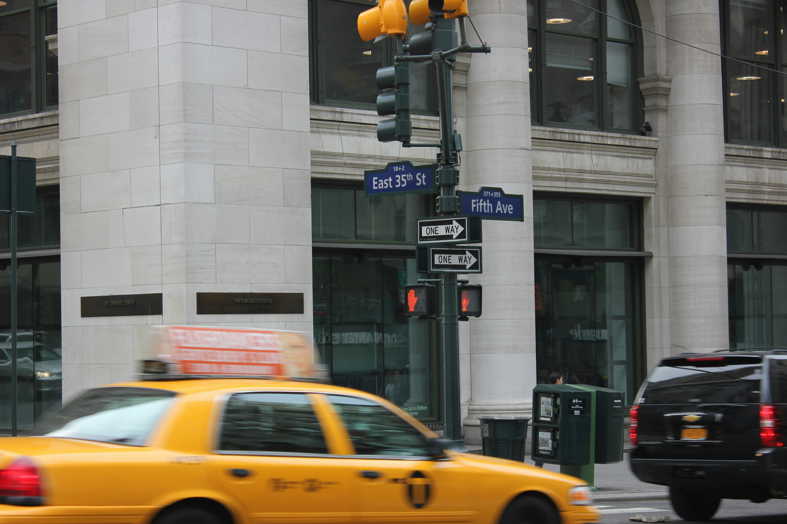

Fashion is always evolving, and New York City plays a major role in setting trends that influence the world. Each season, new styles emerge from the runways of NYFW, influencing what people wear both on and off the runway. From bold colors and statement pieces to minimalist designs and sustainable fashion, NYC embraces a mix of aesthetics that reflect its fast-paced environment. Whether you’re following designer collections or everyday fashion in the city, NYC is always ahead of the curve when it comes to style.

